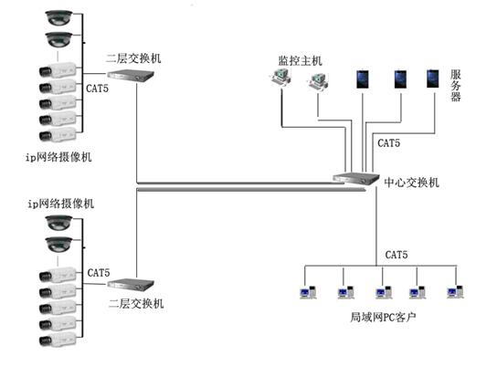

数字视频监控方案
闭路电视监控系统亦称为CCTV（close circuit television）。它包括：
鉴于传统监控工程中所采用的基于混合硬盘录像机和模拟摄像机及模拟矩阵系统的半数字视频监控系统在用于大型监控系统时清晰度不高、易干扰、控制系统和线缆复杂难于维护、后期扩展升级困难等问题，本视频监控工程采用基于IP网络数字摄像机和纯数字硬盘录像机及数字矩阵系统实现全数字化的网络视频监控模式，本方案从摄像到传输及显示记录与控制实现完全数字化，从而保障视频监控信息摄制真正高清化，并且无损的传输记录和控制，线缆结构模块化综合布线，控制存储集中管理，使整套系统完美和谐并向后兼容，做到耐用（高质量、高性能、高扩展、易升级）、好用（结构简洁、操作直观、稳定可靠、维护容易）。
系统结构图如下：
网络拓扑图如下：
